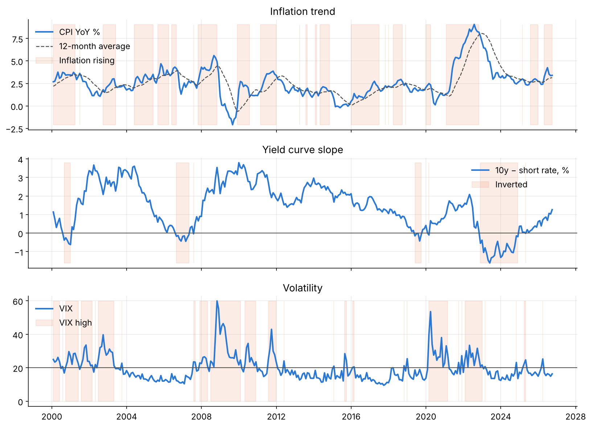
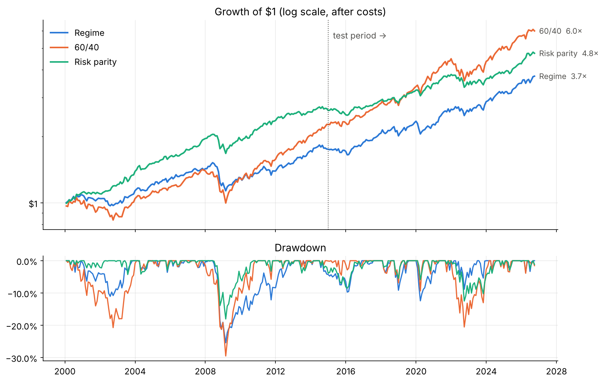
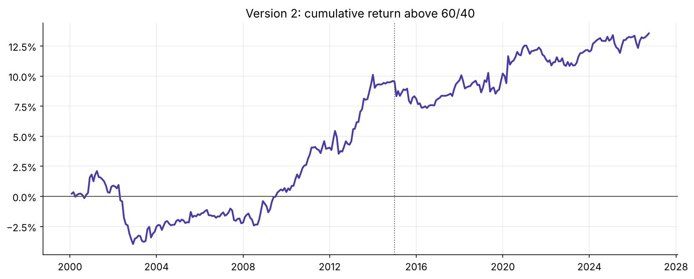
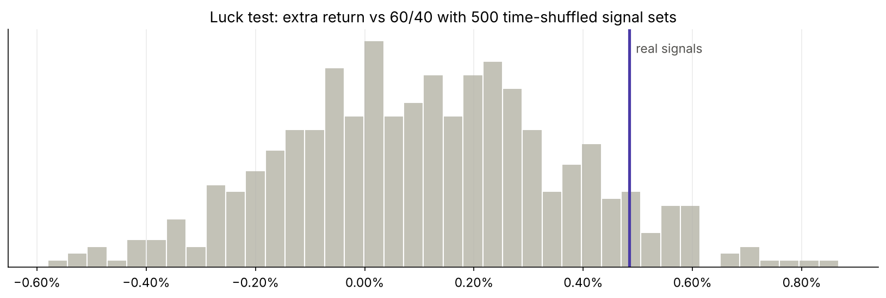

The question
A 60/40 stock-bond portfolio is the standard benchmark, and it's hard to beat. Risk parity, which weights assets by their volatility, is the main alternative. The idea I wanted to test was that different economic "regimes" favour different assets, so a portfolio that reads the regime should do better than one that never changes.
The signals
- Inflation trend: is year-on-year CPI inflation above its own 12-month average?
- Yield curve: is the 10-year Treasury yield below the 3-month yield (an inversion)?
- Volatility: is the VIX above 20?

How I tested it
I used monthly data from 1995 to September 2026: SPY for equities, IEF for bonds, DBC (with earlier proxies) for commodities, and T-bills for cash. Every trade pays 10 basis points in costs.
The key discipline: I chose every setting using 2000–2014 only, and looked at 2015–2026 once, at the end. A strategy tuned on the same data it's judged on will always look good.
Version 1: full regime portfolios
The first version switched between whole portfolios depending on the regime. It cut risk sharply, but it gave up too much return.
| 2015–2026 test | Sharpe | CAGR | Max drawdown |
|---|---|---|---|
| Regime v1 | 0.63 | 6.7% | −12.4% |
| 60/40 | 0.70 | 8.6% | −20.5% |
| Risk parity | 0.50 | 5.2% | −12.5% |

What the data taught me
Instead of tweaking rules at random, I measured what each signal actually predicted for the following month:
- Rising inflation was followed by weak equities, as expected, but also by weak commodities. By the time CPI shows a trend, the commodity move has usually happened already.
- An inverted curve warns of recession 12 to 24 months ahead, while stocks often keep rising for a year. Selling straight away costs return.
- A high VIX was followed by higher stock returns on average. Fear spikes tend to reverse, so de-risking after a spike sells near the bottom.
Version 2: small tilts around 60/40
So I kept 60/40 as home base and let each signal move just 5%. Inflation and the curve shift weight between stocks and cash, and the VIX shifts it between stocks and bonds, so equities range from 45% to 75%. All eight variants I tried on the training period scored within 0.04 Sharpe of each other, so I kept the one with the clearest economic logic rather than the best score.
| Train Sharpe | Test Sharpe | Test CAGR | Test max DD | Turnover / yr | |
|---|---|---|---|---|---|
| Tilt (v2) | 0.51 | 0.72 | 9.0% | −20.4% | 40% |
| Regime (v1) | 0.30 | 0.63 | 6.7% | −12.4% | 120% |
| 60/40 | 0.46 | 0.70 | 8.6% | −20.5% | 11% |
| Risk parity | 0.77 | 0.50 | 5.2% | −12.5% | 16% |

Trying to break it
A small edge can easily be luck, so I stress-tested version 2:
- Start dates from 2000 to 2015: it beat 60/40 every time, by 0.3% to 0.8% a year.
- Trading costs from 0 to 50 bp: still ahead.
- Different thresholds for the VIX and the curve: still ahead in all six combinations.
- Luck test: I shuffled the signals in time 500 times. The real signals beat 93% of the shuffled ones (p ≈ 0.07).

The honest finding. Version 2 holds about 5% more equities than 60/40 on average. Against a fixed portfolio holding that same average mix, the timing added +0.7% a year in 2000–2014 but −0.3% a year in 2015–2026. In the test period, the edge over 60/40 came from owning more stocks, not from reading the regime.
Takeaways
- Keep training and test periods separate, and look at the test once. It's the only way to trust a number.
- Check what each signal actually predicts before building rules on it. Two of my three intuitions were partly wrong.
- Compare against the "no-signal" version with the same average exposure. That test showed where the edge really came from.
- Low-cost and robust is not the same as proven. A t-stat of 0.8 means the edge needs more data.
What I'd test next
- Replace on/off flags with a score, such as how far the VIX is above 20, and tilt gradually.
- Require a signal to persist for two months before acting, to cut whipsaw trades.
- Add a growth signal, such as the unemployment trend, as a fourth input.
- Use TIPS or gold instead of broad commodities as the inflation hedge.
Data: Yahoo Finance (SPY, IEF, DBC, ^TNX, ^IRX, ^VIX) and BLS CPI-U. The curve is the 10-year minus the 3-month yield. Results ignore taxes, and trades happen at month-end closes.
Next chapter →
Chapter 2: Cross-Asset Correlation Regime Decomposition Study
When does the stock-bond hedge fail, and can you trade it?